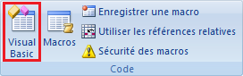
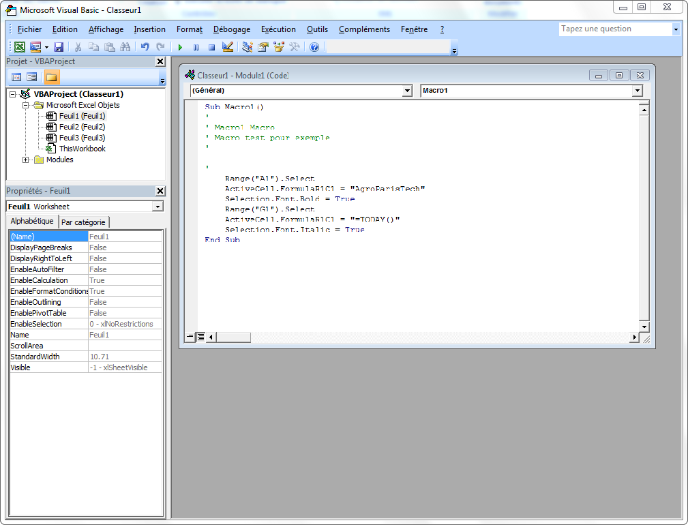
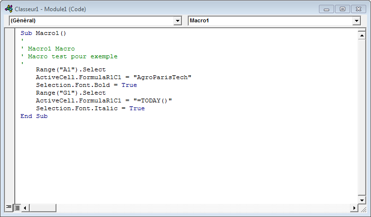
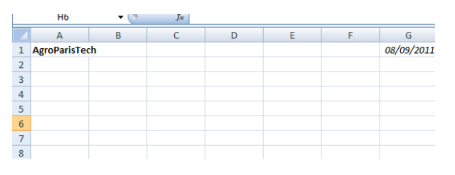
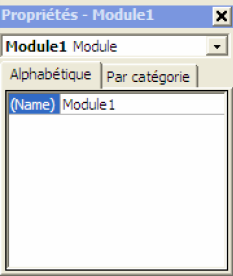
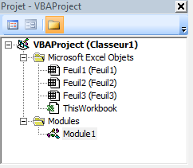
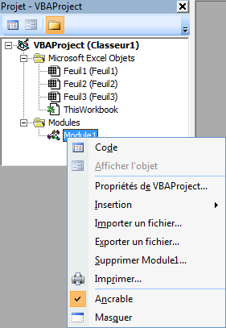

Chapitre 2 - L’environnement de développement Visual Basic Editor
Comme indiqué précédemment, l’enregistreur de macros permet de créer rapidement des programmes VBA simples. Pour aller plus loin, il faut connaître le langage VBA et apprendre à écrire soi-même les instructions qui correspondent aux actions que l’on souhaite faire réaliser par notre programme.
Pour cela on dispose sous Excel d’un environnement spécifique appelé
Visual Basic Editor qui s’exécute dans une fenêtre différente de celle d’Excel. Cet environnement permet de modifier des codes existants (produits par exemple par l’enregistreur de macros), de créer de nouveaux programmes à partir de rien, d’organiser ses programmes suivants leurs rôles dans des
modules
, de créer des
procédures
et des
fonctions
, qui pourront être communes à différents programmes ou utilisables directement dans les feuilles de calcul, …
L’environnement VBE s’ouvre en cliquant sur le bouton ci-dessous :

Cette fenêtre s’ouvre alors et vous donne accès à de nouvelles fonctionnalités :

Cette fenêtre se décompose notamment en trois parties :
affichage, écriture et modification des fichiers de programmes disponibles ou modules de codes
affichage des propriétés du module de code sélectionné
explorateur de l’ensemble des modules de codes
Les particularités de ces zones sont détaillées dans les sections suivantes.
Fenêtre de lecture, écriture et modification d’un programme
Toutes les instructions VBA sont enregistrées dans un module de code qui est affiché dans la fenêtre principale de VBE à droite.

Cette fenêtre se comporte comme un éditeur de texte classique avec quelques fonctionnalités supplémentaires telles que la coloration du texte en fonction de la nature de ce qui est écrit :
- Les
mots clés
du langage sont affichés en bleu. Par exemple : Sub (mot clé de début de procédure), True (constante booléenne), …
- Les
commentaires
sont affichés en vert. Par exemple : « Macro test pour exemple ». Ils sont précédés d’une apostrophe.
Un programme est une suite d’
instructions
. Elles sont généralement écrites sur une seule ligne.
Exemple :
Range("A1").Select
Cette instruction permet de sélectionner la cellule nommée A1 dans le classeur courant.
Une procédure commence par le mot clé
Sub suivi du nom de la procédure et d’une liste d'
arguments
entre parenthèses, qui peut être vide. Elle se termine par le mot clé
End Sub. Une procédure a la syntaxe suivante :
Sub NomProcédure(argument_1,..., argument_n)
Instructions
...
End Sub
Dans l’exemple précédent, la fenêtre d’affichage de modules de codes affiche le module nommé Module1 (cf. bandeau de la fenêtre). Ce module contient une seule macro nommée Macro1.
Dans cette macro, il y a 4 lignes de commentaires, commençant par une apostrophe puis 6 instructions :
L'instruction Range("A1").Select sélectionne (Select) une cellule (Range) désignée par sa ligne (1) et sa colonne (A).
L'instruction ActiveCell.FormulaR1C1 affecte une formule à la cellule active (ActiveCell).
L'instruction Selection.Font permet d’appliquer un format de police (Font.Bold ou Font.Italic) à la cellule sélectionnée (Selection).
Lorsque cette macro est lancée on observe donc dans Excel le résultat suivant :

Les macros produites par l’intermédiaire de l’enregistreur de macro sont stockées dans des modules de codes. Un module de code peut contenir plusieurs macros ou fonctions.
Créer et supprimer une procédure directement dans VBE
Pour créer une nouvelle procédure directement dans VBE, sans passer par l’enregistreur de macros, il suffit de taper dans l’éditeur de texte de VBE le mot clé Sub dans un module de code et en dehors de toute autre procédure, suivi du nom que vous voulez attribuer à votre macro.Vous pouvez ensuite ajouter les arguments entre parenthèses.
Lorsque vous passez à la ligne, le mot clé End Sub délimitant la procédure est automatique ajouté. Vous n’avez alors plus qu’à compléter les instructions selon la tâche qu’elle doit remplir.
Pour supprimer une procédure directement dans VBE, il vous suffit de sélectionner le texte correspondant entre le mot clé Sub et le mot clé End Sub et de le supprimer.
Pour que les programmes produits soient conservés, il faut les sauvegarder en cliquant sur l'onglet FICHIER - ENREGISTRER ou en tapant le raccourci clavier CTRL+S.
Affichage et modification des propriétés d’un module de code

La fenêtre en bas à gauche de l’environnement VBE permet d’afficher et de modifier les propriétés du module sélectionné.
On peut constater qu’un module est uniquement caractérisé par un nom que l’on peut modifier par simple saisie dans la case se situant à droite du mot clé (Name).
Retrouver un programme enregistré : l’explorateur de projets
A chaque classeur Excel ouvert est associé un projet VBA.
L'explorateur de projets (partie en haut à gauche de la fenêtre VBE) affiche une liste hiérarchisée des différents projets VBA associés aux classeurs Excel ouverts.
Un projet VBA associé à un classeur regroupe les éléments du classeur, comme ses feuilles de calcul, les procédures et les fonctions associées à ce classeur et stockées dans un ou plusieurs modules de code.

Par exemple, le projet VBA associé au Classeur1.XLS est composé de deux dossiers :
- le dossier Microsoft Excel Objects qui contient les éléments attachés au projet : le Classeur1.XLS (ThisWorkbook) et ses feuilles de calcul Feuil1, Feuil2 et Feuil3 ;
- le dossier Modules qui contient les modules de code du projet : le module MODULE1 qui contient la macro MACRO1.
L’explorateur de projets permet, à l’aide du clic droit de la souris, d’ouvrir un module de code (option CODE), d’insérer un nouveau module de code (option INSERTION) ou d’en supprimer un (option SUPPRIMER ‹ NOMMODULE ›).

L’ouverture d’un module de code peut également se faire par double-clic sur celui-ci dans l’explorateur de projets.
La commande INSERTION MODULE permet également d’insérer un nouveau module de code.
On peut insérer autant de modules de code qu’on le désire en fonction des besoins recensés. Dans la pratique, on cherche à regrouper dans un même module tous les éléments de programmes qui se rapportent à un ensemble de fonctionnalités donné. Par exemple, si l’on crée des fonctions de calcul mathématiques, on les regroupera dans un même module que l’on pourrait nommer Maths.
Exécuter directement dans VBE une procédure sans argument
Les procédures avec arguments et les fonctions ne peuvent être exécutées que par d’autres procédures ou fonctions et n'apparaissent pas dans la liste des macros de la boîte de dialogue MACRO.
Pour exécuter une procédure sans argument, positionnez le curseur dessus et cliquer sur l’onglet EXECUTION - EXECUTER SUB/USERFORM (F5) en haut de la fenêtre ou cliquer sur l’icône .
Pour arrêter l'exécution d’une procédure sans argument si une erreur survient, cliquez sur l’onglet EXECUTION - REINITIALISER en haut de la fenêtre ou cliquer sur l’icône .
Seules les procédures sans argument peuvent être exécutées directement par ces méthodes.